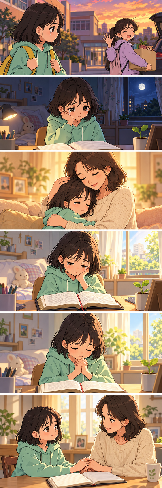

접으면 55 × 85mm · 핵심 말씀 3절 · 날짜별 QR앞뒤 두 페이지를 같은 위치에 배치했어요. A4 세로, 배율 100%, 양면 긴 쪽 넘김으로 출력한 뒤 테두리를 자르고 가운데를 접어요. 먼저 한 장으로 앞뒤 정렬을 확인해 주세요.
시연용 레이아웃입니다. 재단 여유·색상 등 인쇄소용 마감은 별도로 필요합니다.

바깥면 · 왼쪽 뒷면 / 오른쪽 표지 · 가운데 접는 선
시편 30:2, 4–5 · 개역개정
안쪽면 · 왼쪽 말씀 / 오른쪽 묵상 활동